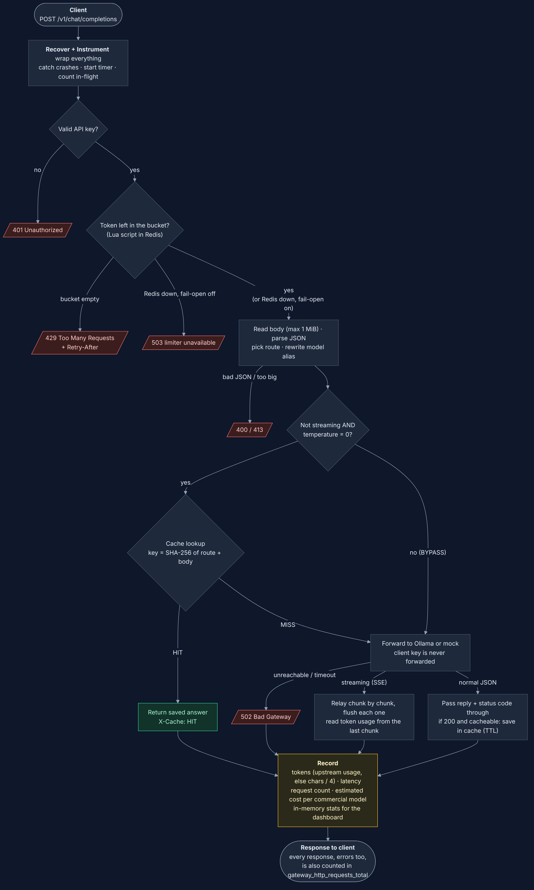
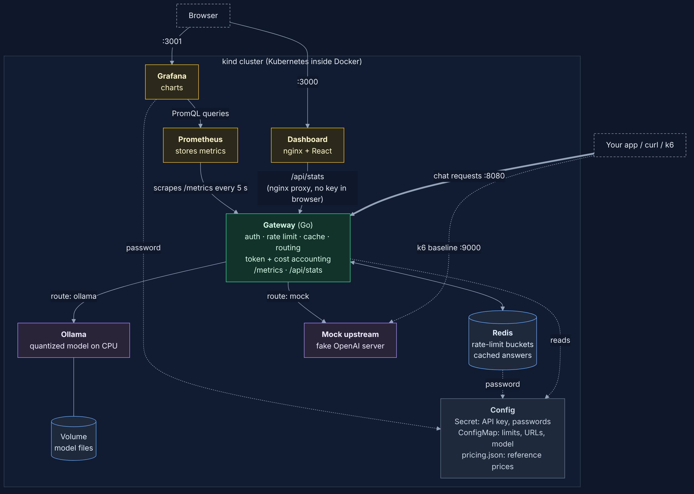

Checks your key
Requests must carry a secret API key. Wrong key, no entry.
Showing your badge at the door.
internal/middleware
An open-source project, explained for people new to it
llmgate is a small program written in Go. It sits between your app and an AI model and decides who gets in, remembers answers it has already seen, survives failures, and counts every token. It runs on your own laptop, with no paid API.
The idea
An AI model is the busy specialist on the 12th floor. Anyone can walk up and ask them a question, but they are slow and expensive. The front desk checks your ID, tells you to wait if you are asking too fast, hands you a stored answer if someone just asked the same thing, and keeps a log. That front desk is llmgate.
Every app talks to the model directly. Each one needs its own keys, its own retry code, its own limits and its own way of counting cost. If the model goes down, every app breaks in its own way.
Apps talk to one address. Rules, safety nets and numbers live in one place, so you can see what is happening and change it without touching the apps.
What it does
Requests must carry a secret API key. Wrong key, no entry.
Showing your badge at the door.
internal/middleware
Each client gets a bucket of tokens that refills steadily. Ask too fast and the bucket is empty, so you get a polite “try again in a moment” (HTTP 429).
A turnstile that lets in a few people per second.
internal/ratelimit (Redis + Lua)
If the exact same question was answered recently, return the saved answer instantly and skip the model. Only used when the answer should always be the same (temperature 0).
Photocopying a reply you already wrote.
internal/cache
Counts tokens in and out and works out what the same traffic would have cost on commercial models. Always labelled estimated.
A meter on the wall.
internal/pricing, internal/stats
If the model hiccups, try once more after a short, slightly random wait. Not for client mistakes and not for timeouts.
Redialling a busy phone line.
internal/resilience
After several failures in a row, stop calling the broken model for a while and fail instantly instead of making everyone wait. Later, let one test request through.
A fuse that trips so the house does not burn.
internal/resilience/breaker.go
If the main model is down, answer from a backup model instead of showing an error.
The substitute teacher.
internal/proxy
Each API key gets a token allowance per day. Used it all up and you get “insufficient quota”. Cached answers cost nothing.
A prepaid phone plan.
internal/budget
Every request gets a number that appears in the response and in the logs, so one request can be followed end to end.
A parcel tracking number.
internal/reqid
Exposes numbers for Prometheus, charts them in Grafana, and shows a friendly cost-savings page. Nine alert rules flag trouble.
The control room screens.
dashboard/, deploy/k8s/files
See it work
This runs in your browser with small made-up numbers so you can see each rule trigger. It is a teaching model, not the real gateway. Try the suggestions below.
Try: (1) New, then Same: the second one is a cache hit. (2) Send 6 fast: the bucket runs dry and some get 429. (3) Turn on “Main model is down”, send 3 new questions and watch the circuit trip; with the backup on you still get answers, with it off you get errors. (4) Keep sending new questions until the budget runs out.
How the pieces fit
Everything runs as separate containers on your laptop. Only the gateway contains the clever logic; the rest are well-known tools it uses.


Does it slow things down?
Load test with k6 at 100 requests per second for one minute, on a laptop, against the mock upstream (about 25 ms per reply).
| Latency | Direct to mock | Through gateway | Gateway adds |
|---|---|---|---|
| p95 | 31.93 ms | 32.64 ms | ≈ 0.7 ms |
| p99 | 33.35 ms | 34.63 ms | ≈ 1.3 ms |
About 30% of requests were cache hits, answered in under a millisecond, which is why the gateway’s average looks lower than direct. The p95 and p99 rows describe the slowest requests, which are the ones that reached the mock. These are local numbers with a fake model, so they measure the gateway’s own overhead, not real AI speed. Repeat the run yourself with make loadtest-gateway.
Try the real thing
You need Docker Desktop. For the Go-only route, see the README.
Clone the repository and open it in a terminal.
git clone <your-repo-url> llmgate
cd llmgateMakes random passwords in a git-ignored .env file. Nothing secret is ever stored in the code.
make envThe first build takes a few minutes.
docker compose up --buildThen open localhost:3000/dashboard/ (cost dashboard) and localhost:3001 (Grafana). This guide page itself is what you see at localhost:3000.
KEY=$(grep ^GATEWAY_API_KEY .env | cut -d= -f2)
curl -s localhost:8080/v1/chat/completions \
-H "Authorization: Bearer $KEY" \
-d '{"model":"mock-fast","messages":[{"role":"user","content":"hi"}]}'DEFAULT_ROUTE=ollama FALLBACK_ROUTE=mock docker compose up --build. Ollama is not running in that setup, so requests fail over to the mock. The dashboard’s “Upstreams” strip then shows ollama: circuit open and mock: healthy.If you want to read the code
| # | File | What you learn |
|---|---|---|
| 1 | internal/pricing/pricing.go | The simplest file: structs, methods, JSON, errors. |
| 2 | internal/stats/stats.go | Many requests at once and why shared data needs a lock. |
| 3 | internal/ratelimit/ratelimit.go | Interfaces: the same code runs on Redis or in memory. |
| 4 | internal/resilience/breaker.go | A small state machine: closed, open, half-open. |
| 5 | internal/middleware/middleware.go | Layers wrapped around a handler like an onion. |
| 6 | internal/proxy/proxy.go | The heart: route, cache, retry, fall back, stream, count. |
| 7 | cmd/gateway/main.go | How everything is wired together and shut down cleanly. |
Glossary
A program that receives requests on behalf of another service, does some work on them, and forwards them. Clients only ever see the gateway.
Latency is how long a request takes. p95 means 95% of requests were faster than this number; p99 means 99% were. They show how bad the slow ones are, which averages hide.
A very fast in-memory data store. Here it holds rate-limit buckets, cached answers and budgets, so they are shared and do not depend on one program’s memory.
A tiny program Redis runs as one indivisible step. The rate limiter uses it so two requests cannot both grab the last token.
429: you are asking too much or out of quota. 503: the service says it is unavailable right now. 502: the gateway could not reach the model.
Prometheus collects numbers (metrics) from the gateway on a timer. Grafana draws charts from them. Together they are called observability.
Ollama runs a real small AI model on your computer’s processor. The mock is a fake model that answers instantly or slowly on demand, so you can test failures and load without a real model.
Kubernetes manages containers across machines. kind runs a tiny Kubernetes cluster inside Docker on your laptop, so you can practise the real deployment style for free.
A load-testing tool. It sends a steady stream of requests and reports how fast they were answered.
If Redis breaks, the gateway lets requests through instead of blocking everyone. Safer for availability, with a trade-off that limits are not enforced while Redis is down.
Honest limits
One gateway copy, no TLS, no user accounts, and alerts that appear on a page but send no messages.
“Saved” compares token counts to public list prices. It does not account for quality: a small local model is not the same as a frontier model.
Speed results come from a laptop and a fake model. A real CPU model takes seconds per reply.